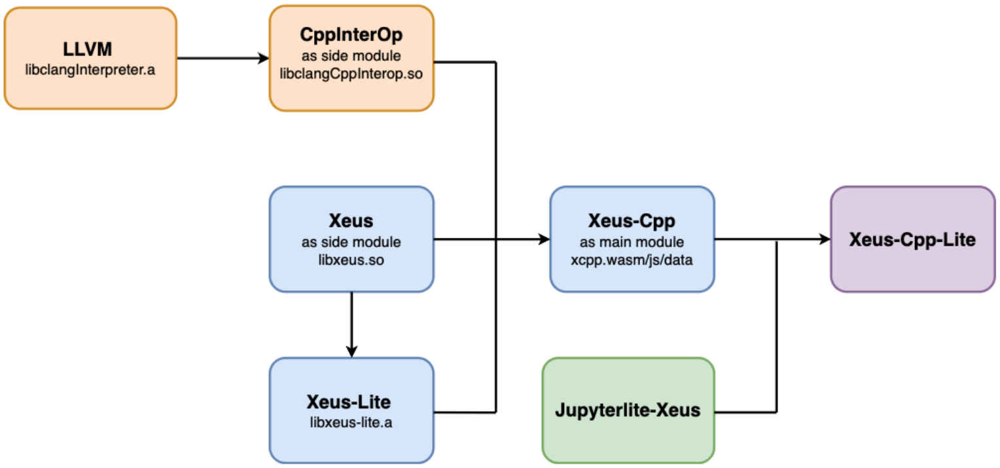
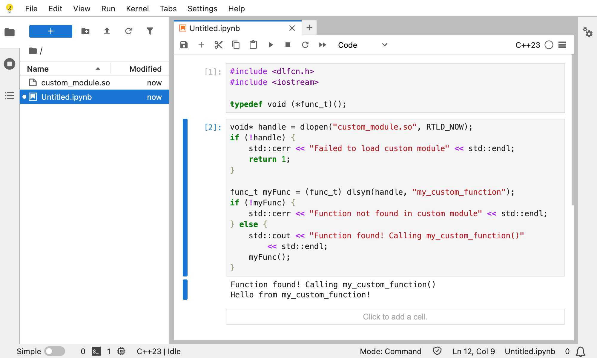

xeus-cpp, the new C++ kernel for Jupyter

About
 Anutosh Bhat
Anutosh Bhat
Software engineer at QuantStack
Contributes to the xeus stack
Contributes to LLVM
Johan Mabille
Technical director at QuantStack
Jupyter Distinguished Contributor
Contributes to mamba and xtensor
Writing Jupyter Kernels (1/2)
Before 2017
- Write from scratch
- Use the kernel wrapper approach
2017: release of xeus
- A modern C++ implementation of the Jupyter Kernel Protocol
- Not a kernel, but a tool to make kernel
Writing Jupyter Kernels (2/2)
After 2017: xeus-based kernels
- xeus-python
- xeus-sql, xeus-sqlite
- xeus-cling, based on Cling, a C++ interpreter developped at the CERN
2022: split of xeus
- xeus: implementation of the Jupyter Kernel protocol with no middleware
- xeus-zmq: ZMQ-based middleware for xeus
- xeus-lite: emscripten-based middleware for xeus
The need for a new C++ kernel
Limitations of Cling
- Based on an outdated version of Clang
- Limited capabilities and compatibility with modern C++ features
- Hard to maintain on all the platforms
xeus-cpp, based on Clang
- Recent versions of Clang incorporated REPL in their codebase
- Extensible architecture based on plugins
- Supports modern versions of C++, and many features (CUDA, python)
Runtime Execution: Native vs Wasm
Clang-Repl on Native Platforms
- Uses LLVM’s ORC JIT for runtime compilation
- Compiles code & executes directly from memory
Clang-Repl in the Browser
- WebAssembly enforces a strict sandbox model
- Can’t write or modify executable memory at runtime
- Memory is separated into code and data (Harvard architecture)
WASM backend for Clang-Repl
LLVM 17 introduced a WASM-specific IncrementalExecutor that avoids LLVM's ORC JIT
The new WasmIncrementalExecutor handles the wasm execution as follows:
- Each REPL input is parsed into a
Partial Translation Unit (PTU)
PTU is lowered to LLVM IR, then compiled to a WASM object file- The object is linked with
wasm-ld into a standalone binary (incr_module_x.wasm)
- The side module is dynamically loaded with emscripten’s
dlopen, extending the main module
WASM backend for Clang-Repl
These modules:
- Share the same memory as the main
wasm module
- Resolve symbols from earlier cells (cross-cell linking)
- Mimic dynamic linking, even though
WASM doesn’t support shared libraries traditionally
🚀 This model effectively turned Clang-Repl into a live REPL for WebAssembly, enabling dynamic incremental C++ in the browser!
Xeus-Cpp-Lite Configuration

Fig: Configuration flow for Xeus-Cpp-Lite in the browser
Loading third-party/custom libs
1. Create a simple C++ module
// custom_module.cpp
#include <iostream>
extern "C" {
void my_custom_function() {
std::cout << "Hello from my_custom_function!" << std::endl;
}
}
Loading third-party/custom libs
2. Compile it to a WebAssembly shared object
emcc custom_module.cpp \
-O2 \
-s SIDE_MODULE=1 \
-s WASM=1 \
-fPIC \
-o custom_module.so
Loading third-party/custom libs

Near Future Work
-
Last Value Printing
-
Debugger Support
-
CUDA Support
-
Python Interoperatability
-
Multiple Interpreters
Debugger Support
CUDA Support
Python Interoperability
Multiple Interpreters
Acknowledgements
Compiler Research Group
Google Summer of Code